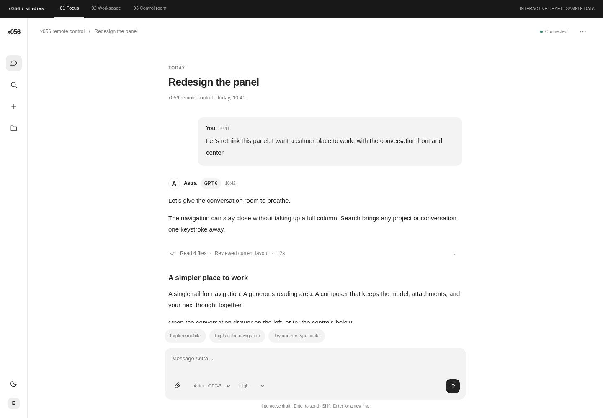
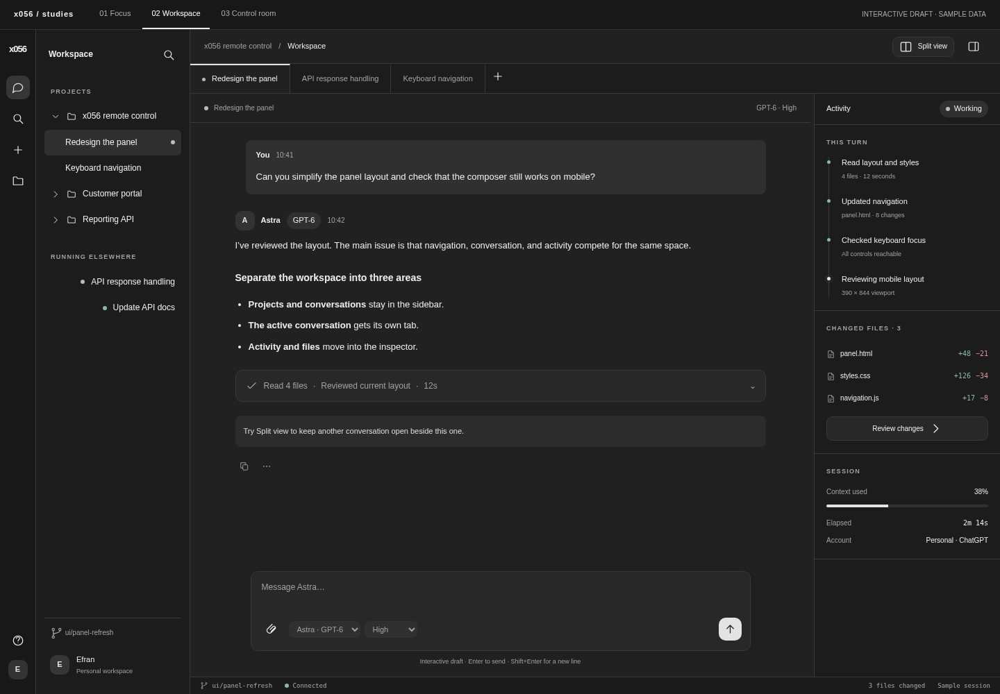
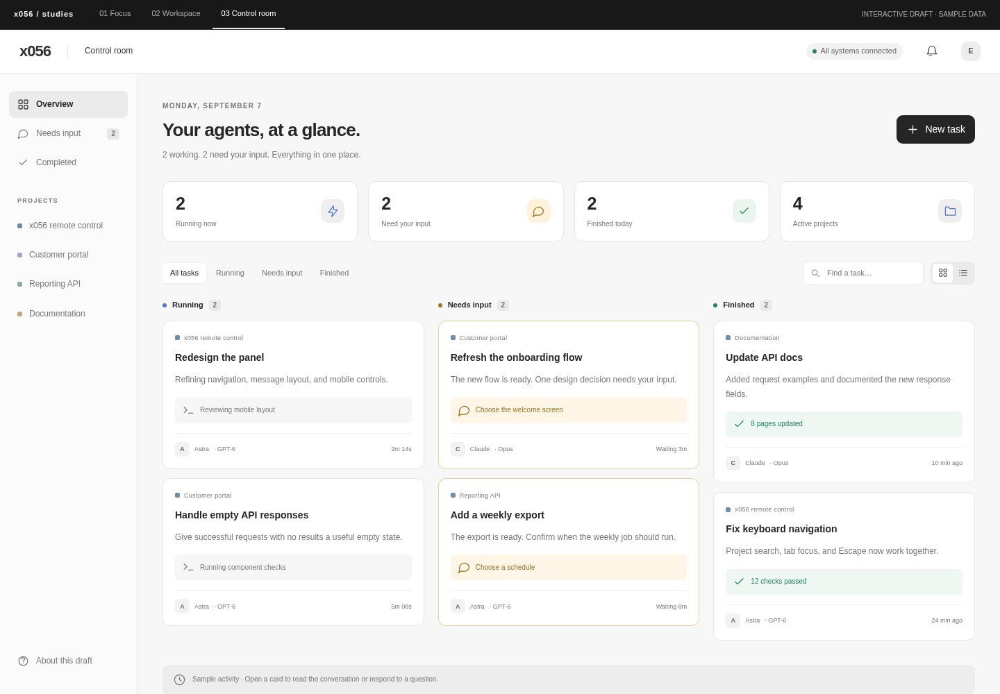

01
Focus
Closest to your referenceA spacious conversation with a compact navigation rail. Projects stay in a drawer until you need them.
Try it: open search, switch themes, attach a sample file, and send a message.
Explore Focus Neutral colors, simple type, and less visual noise. Explore three different layouts for your conversations and agents.
Open a task from the board, then maximize its chat to switch to Focus.

A spacious conversation with a compact navigation rail. Projects stay in a drawer until you need them.

Conversations in tabs, with activity and changed files beside the chat. Split the view to work across two conversations.

See every agent’s progress in one place. Open a task to read the conversation or answer a pending question.